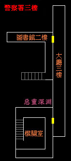
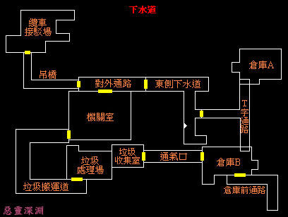

|
惡靈古堡２-----�堙EClaire攻略流程
|
以下的攻略可以取得所有的File，標綠色的道具是重要道具，一定要取。
|
遊戲開始後，沿路來到置物小屋外的管理室，桌上有小屋鑰匙。 |

| 進入置物小屋，經室外廣場的樓梯上到二樓停機坪，欣賞一段動畫。 |

|
從東側迴廊往逃生梯，逃生梯間有綠色藥草，由一樓門出去後到達一樓東側辦公室，逃生梯門前的屍 體身上有手槍子彈。 在東側辦公室內的木架上取得活門旋柄，照原路走回停機坪旁的小隔間使用，將火澆熄。 離開停機坪回東側迴廊，會看見一段動畫，和 T-002 決戰於東側迴廊，迴廊中間的屍體身上有手槍子 彈，打敗他後上他身上也能取得手槍子彈。 進入美術室，在雕像旁找到藍色磁卡。 接待室裡有色帶、秘書的日記Ａ，到手後在大廳 2F 迴廊底部找到獨角獸徽章，將迴廊中央的逃生梯放 下並下至一樓。 在一樓大廳女神像前使用獨角獸徽章，得到黑桃鑰匙，櫃檯有硫彈槍、色帶，在電腦 前使用藍色磁卡 解除門鎖。 門鎖解除後服務處就可以進去了，服務處長椅上有屬內回覽，角落小櫃子的抽屜可用隨身攜帶的鐵絲 打開，可以拿到急救噴霧。 經西側通路到檔案資料庫，進門右轉到底的文件櫃上有巡邏報告書，左手邊的櫃子有色帶，梯子推到 底，取得櫃子上的打火機。 到作戰會議室，桌上有作戰報告書１，在最內側壁爐使用打火機得到紅寶石。 經暗房前通路（有綠色藥草），到二樓石像的迴廊推動石像使他們面對面，得到紅寶石。 進入 S.T.A.R.T. 辦公室和 Leon 碰面接過Chris的日記，中間的桌上有方塊鑰匙，最左邊的桌連按五十次 得底片Ｄ，左側第二個桌上有手槍子彈，鐵櫃裡有十字弓槍，出門前收到傳真，調查後得到給Chirs的 調查報告。 出辦公室看到 Sherry ，跟著她的身影追至 2F 大廳，長廊底端架上有火炎彈，門前的小桌抽屜用鐵絲打 開得手槍子彈。 由 2F 大廳到圖書室，此時 1F 的西側通路電線失靈闖入大批僵屍（依表關使用電線的地方，沒被使用 的走廊就會發生此事件），上樓梯到底後跌落，將一旁電源打開，再把左邊兩個書櫃都像右移一格， 小隔間裡的機關就會打開，取得海蜥石。 帶著兩顆紅寶石回到 2F 的美術室，在兩座石像使用後可在中央石像取得青石。 到一樓的偵訊室Ａ，在櫃上取得鷹石，桌上有急救噴霧，偵訊室Ｂ有手槍子彈。 帶著方塊鑰匙開啟 1F 置物間，在裡面的櫃子找找，可以找到塑膠炸藥、底片Ｂ、十字弓箭，此時先前 往暗房，將所有底片沖洗出來，同時暗房桌上有色帶、作戰報告書２。 前往西側辦公室，門旁有綠色藥草，桌上有手槍子彈，靠近門的桌上有給 Leon 的字條，最重要的是隔 間桌上的信管（與塑膠炸藥組成塑膠炸彈）。 在 2F 美術室前迴廊墜毀的直昇機處使用塑膠炸彈，打開通往署長辦公室的通路。 進入署長辦公室，發生劇情，結束後經署長室迴廊到署長個人收藏室，打開閃著紅光的電源，與Sherry 相遇，桌上有秘書的日記Ｂ，裡側箱子有急救噴霧。 回署長辦公室，取得桌上的紅心鑰匙，椅子上有署長的手札，調查椅子後方的圖畫，打開機關，可以 先裝上海蜥石和鷹石。 |

|
經 1F 的休息室前通路往地下一樓，由於表�媦@情相對應的關係，此時 Leon 還未推開停車場的汽車， Claire 無法過去。 |

|
從下水道通路下去到達下水處理場右側通路，進入右置物間，出來後碰到 Sherry ，發生劇情，角色切 換成 Sherry 。 搭電梯到下水處理場中央部，中央通路有榴彈，進入排水控制室，牆上有下水處理場地圖，將箱子排 列好後放水通過，在櫃子上取得梅花鑰匙後，回到一開始的地方，角色切換成 Claire 。 （可以不去）回到地下一樓電力供應室取得綠色藥草、地下室地圖，調整電力供應 的機器，正確的 調法是「 上 . 上 . 下 . 上 . 下」。 （可以不去）進入停屍間，在裡側鐵櫃取得紅色磁卡，在武器庫使用紅色磁卡，裡面有硫酸彈，衝鋒 槍、腰包二選一（表關選走的就不會出現）。 此時可以前往犬舍了，在地圖黑點處附近有曲柄，還有藍色、綠色藥草。 離開地下一樓，進入值班休息室，裡面有喬治的日記、硫酸彈。 帶著打火機與梅花鑰匙前往視聽室，先將火爐點燃，依12皇后、 13國王、 11傑克的順序打開，金色齒 輪就會掉下，去將齒輪拾起，在這之前 T-002 再度來襲，勝利後在他身上有道具。離開時在ㄇ字通路 會再次碰上 T-002 。 |

|
經 2F 圖書室的階梯到 3F ，在機關室牆上使用曲柄，在齒輪處使用金色齒輪後按下按鈕，從打開的門 取得第二塊青石（與之前的青石組合）。 出至大廳 3F 時，T-002 出現。 回署長辦公室，遇到 Sherry ，在機關處裝上青石、鷹石、海蜥石，秘密通道打開，通道地板有給署長 的信，之後乘坐電梯到地下一樓的隱藏通路，再到解剖室，發生劇情，解剖室裡有硫酸彈。 由角落開口下去，要與 G-1 對決，勝利後回署長辦公室找 Sherry ，再次回到與 G-1 對決得地方，將底 端的樓梯放下由此上去。 順著路走發生劇情，Sherry 脫隊。 |

|
經下水道倉庫前通路到倉庫Ｂ， 裡面有手槍子彈、急救噴霧、色帶、給下水道管理員的Fax，並且從置 物箱中取出活門旋柄。 在Ｔ字通路發生劇情，通路牆上有地圖，之後在東側下水道右下方盡頭（見地圖）屍體堆中可找到豺 狼徽章、小鑰匙。 經對外通路到機關室，遇上 Anette，旁邊有藍色藥草盆，在圓孔處使用活門旋柄讓鐵橋降下，到達對面 後再次使用活門旋柄讓鐵橋回升，旁邊有火炎彈、綠、藍色藥草。 在垃圾搬運道，如果表關是使用高壓器瓶擊敗大鱷魚則不會有事，如果是使用武器打死，則這就還需 再次與大鱷魚戰鬥（可以使用高壓器瓶）。 垃圾處理場有色帶，取得後由樓梯上去到達控制室（地圖省略），在控制室的左邊盡頭有大鷲徽章、 下水道管理員日報表，之後由右邊盡頭圓孔處使用活門旋柄後由樓梯上去，通過時小心大蟑螂。 下樓梯到達東側下水道，再到對外通路，在瀑布旁的機關使用豺狼徽章、大鷲徽章，經吊橋到纜車接 駁場，打開小路底部的開關讓列車回站，此時 Sherry 出現歸隊，兩人一同上列車。 |

|
出列車後到達工廠的纜車接駁場，地圖左上角地面有武器櫃鑰匙（可以不拿），西側通路的死路底部 屍體可取得閃電保鑣，東側通路死路底部可取得藍色、綠色藥草。 副控室裡面有急救噴霧、色帶、硫酸彈、火炎彈，Sherry 暫時留下。 操車廠牆上有地圖，鐵架上有手槍子彈，從邊緣的升降梯下去，順著路一直走到底部，到達一處有許 多監視畫面的地方，桌上有工廠鑰匙，打開監視器，看到 T-002 正朝自己走來（沒開監視器他也會來 ），打敗他後回到副控室。 在副控室角落的機器上使用工廠鑰匙，運輸車即會出現在操車廠上，帶妥足夠的武器，前去打運輸車 前的開關，坐上運輸車，車內有火炎彈。 G-3 出現，出運輸車與之戰鬥，勝利後回車廂，運輸車到達研究所地下一樓時停止。 |

|
出運輸車後由周圍一處通風口爬進去，落下後到達地下通路，此時運輸車突然繼續下降。 前往瓦斯控制場，裡端有綠色藥草，接著將鐵箱推上電梯後將電梯啟動往下到達地下二樓。 |

|
將鐵箱推出電梯，一直推到地圖上標示紅點的地方，附近的屍體身上有瓦斯報告書，底端有色帶、火 炎彈。 |

|
從地下二樓的右側電梯搭乘到地下三樓的溶鐵管理處，在通道盡頭打開研究所電源開關。 由原路回到地下一樓，進入緊急電梯，電梯裡有兩處開關，其中一處還無法使用，打開門旁的開關， 下到研究所地下四樓。 |

|
由主電梯出來，前往低溫實驗室，在低溫實驗室的架上有急救噴霧，再往裡側一點有保險絲外殼，將 保險絲外殼拿到右邊的機器上製成保險絲。 將保險絲拿到動力傳導棒使用，讓研究所電力恢復。 前往宿舍，裡面有藍色藥草盆，長椅上有成員登錄法，電腦前有研究設施保安手冊，鐵櫃裡有火炎放 射器，桌上有研究室磁卡（可以不拿）。 （可以不去）宿舍裡頭的藤蔓植物如果在表關已經解決�媄鶼N不會出現，如果還沒解決，可以用打火 機或火炎彈攻擊，接著由此處爬到休息室，休息室鐵櫃裡有榴彈兩組，電腦前有色帶。經Ｂ通道到樓 梯，往下到達研究所地下五樓陽台。 |

|
（可以不去）到南側通路有綠色藥草三株，再到監控室，監控室電腦裡有地圖，再到西側通路，地上 有紅色藥草，接著進入電腦室（必須在宿舍拿到研究室磁卡），在電腦室裡的電腦裡頭登錄GUEST， 然後登錄指紋，就可以去培養實驗室拿武器（表關必須曾經重複此動作，並在培養實驗室前登錄指紋 才算有效），裡面有衝鋒槍及衝鋒槍子彈 100%。 前往研究實驗室，櫃上有急救噴霧，如果之前有拿武器櫃鑰匙，可以打開旁邊的鐵櫃取得榴彈兩組， 往裡走，裡面的桌上有動力室鑰匙。 順原路回到研究所地下四樓，經過監控室時碰上 Anette ，發生劇情，結束後由地下四樓的主電梯回到 地下一樓，經瓦斯控制場的電梯到地下二樓，從之前推的鐵箱爬上去，抵達地下二樓的高台，進入動 力室，動力室裡遇見 Sherry ，發生劇情。 劇情結束後回到地下四樓動力傳導棒，再度遇見 Sherry 和 Anette ，發生劇情，Anette 死亡，撿起遺留在 地上的主鎖鑰匙，帶著 Sherry 前往主電梯，在電梯裡一直不能使用的開關使用主鎖鑰匙打開就能使用 ，打開後到達研究所地下搬運設施。 |

|
從非常通路進入車廂１， Sherry 留在原地，Claire 跑到車廂２底部，桌上有色帶，地上有月台鑰匙，在 此整理裝備，等一下就要進行最終的兩場戰役，但是必須預留一格道具欄，同時把月台鑰匙帶著。 從車廂１下車，用月台鑰匙打開天橋口１，此時時間倒數５分鐘，樓梯後面有置物箱，如果有什麼遺 忘可以在這裡整理，經天橋到天橋口２，在此處地圖標明紅色的地方拿取Ｎ、Ｓ極插頭，然後從樓梯 下面通過前往電力供給區。 在電力供給區底部裝上Ｎ、Ｓ極插頭，此時 T-002 變身後的型態出現，除了火箭砲已經沒有任何武器 可以打敗他，如果玩家身上有火箭砲就一發把他擊斃吧！如果沒有，只要顧著閃躲就好了，等到一定 時間，會有神秘人在高處丟火箭砲給玩家了，拾起火箭砲將他解決。 戰鬥結束後趕快回到非常通路，等一下還要對付 G-5 ，如果已經彈盡援絕了，請在天橋口１補充，將 地圖上非常通路橘色標示點的電源打開後進入車廂，發生劇情，動畫結束後離開車廂１往車廂２，進 入車廂２往裡直跑， G-5 出現，只要跟他保持適當距離攻擊即可，勝利後離開車廂２，之後就等著破 關了。 |
惡靈深淵Biohazard Abyss http://98.to/coolbio